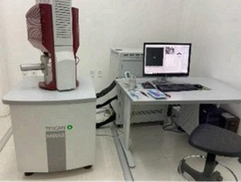
Microscopio Electrónico de Barrido (SEM)
Permite observar superficies y estructuras con gran detalle para analizar morfología, composición y características de materiales avanzados.
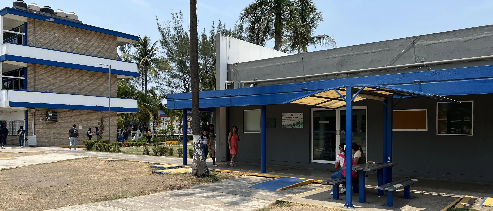
Enlaces
Infraestructura académica y científica del Doctorado en Ciencias de la Ingeniería.
Instalaciones
El Doctorado en Ciencias de la Ingeniería cuenta con infraestructura sólida que respalda el desarrollo académico y científico de sus estudiantes, tanto en recursos bibliográficos como en equipamiento especializado. Dispone de un acervo físico en biblioteca con más de 16,000 volúmenes, así como acceso a recursos digitales a través de plataformas como eLibro y servicios de hemeroteca.
De igual forma, el programa se apoya en laboratorios especializados y tecnología de vanguardia que permiten la realización de investigación original y de alto impacto. A continuación, se presentan algunos de los principales equipos disponibles, organizados por cada Línea de Generación y Aplicación del Conocimiento (LGAC). Por favor, dé clic en la LGAC de su interés para desplegar la información correspondiente:
Esta línea se apoya en el Laboratorio Nacional Conahcyt de Innovaciones Terapéuticas y Sistemas de Liberación Controlada (LNNTE-SILCO), el Laboratorio de Nanotecnología y laboratorios de la Unidad de Desarrollo e Innovación Molecular, con infraestructura para caracterización, reología, digestión simulada y ensayos mecánicos.

Permite observar superficies y estructuras con gran detalle para analizar morfología, composición y características de materiales avanzados.
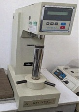
Equipo clave para estudiar la deformación y flujo de materiales, formulaciones, alimentos, biopolímeros y sistemas complejos.
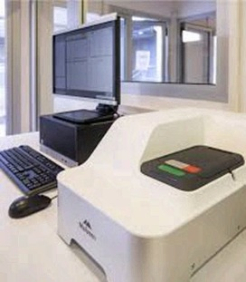
Apoya la caracterización de dispersiones, nanopartículas y sistemas coloidales mediante mediciones precisas de tamaño y distribución.
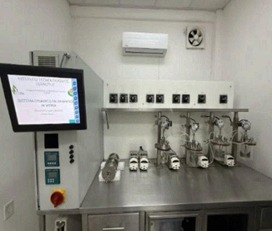
Permite evaluar el comportamiento de compuestos y matrices bajo condiciones controladas que simulan procesos digestivos.
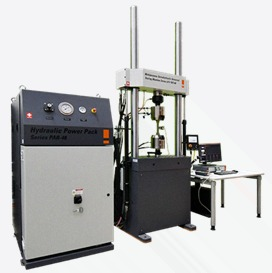
Se utiliza para medir propiedades mecánicas, resistencia, deformación y respuesta de materiales sometidos a diferentes esfuerzos.
Cuenta con el Laboratorio de Bioingeniería y la Planta Piloto de Bioetanol, espacios orientados al desarrollo, monitoreo y escalamiento de bioprocesos, bioenergéticos y productos de valor agregado.
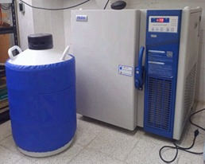
Infraestructura para conservación de muestras, microorganismos, reactivos y materiales biológicos bajo condiciones controladas.
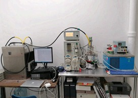
Equipo Applikon para el cultivo controlado de microorganismos y células en procesos de fermentación y bioconversión.
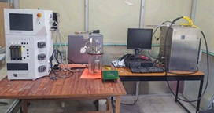
Permite el seguimiento avanzado de bioprocesos mediante monitoreo en línea y control de variables críticas.
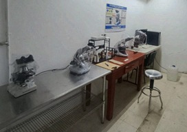
Apoya la observación y análisis de microorganismos, cultivos y muestras relacionadas con bioprocesos.
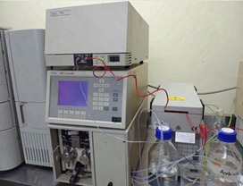
Herramientas para separar, identificar y cuantificar compuestos presentes en muestras de investigación.
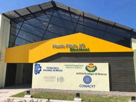
Instalación para investigación y escalamiento de procesos de producción de bioetanol de segunda generación.
La línea dispone de laboratorio de cómputo intensivo y sala de simulación para modelado, optimización, visualización, manufactura avanzada y análisis computacional de sistemas complejos.
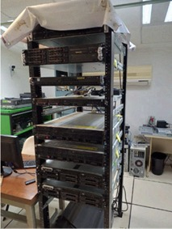
Infraestructura de cómputo de alto rendimiento y visualización 12K para simulaciones, análisis numérico y procesamiento intensivo.
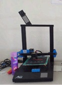
Equipos para prototipado, manufactura avanzada, robótica y validación experimental de soluciones de ingeniería.
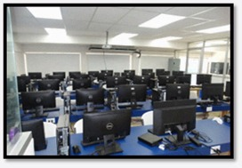
Herramientas como Aspen Plus y Aspen HYSYS para simulación, diseño y optimización de procesos industriales.
Se apoya en laboratorios de Ingeniería de Alimentos y Bioprocesos, equipados para secado, extracción, conservación, análisis de propiedades y evaluación de procesos alimentarios y químicos.
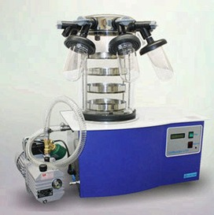
Permite la deshidratación por congelación y vacío para preservar propiedades de muestras sensibles al calor.
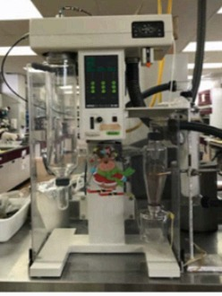
Equipo para transformar soluciones, suspensiones o emulsiones en polvos mediante secado controlado.
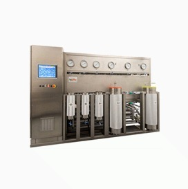
Se utiliza en procesos de extracción limpia y selectiva con fluidos supercríticos.
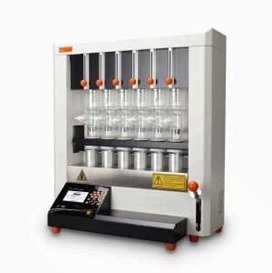
Instrumentos para medir actividad de agua, color y propiedades de calidad en productos y materiales.